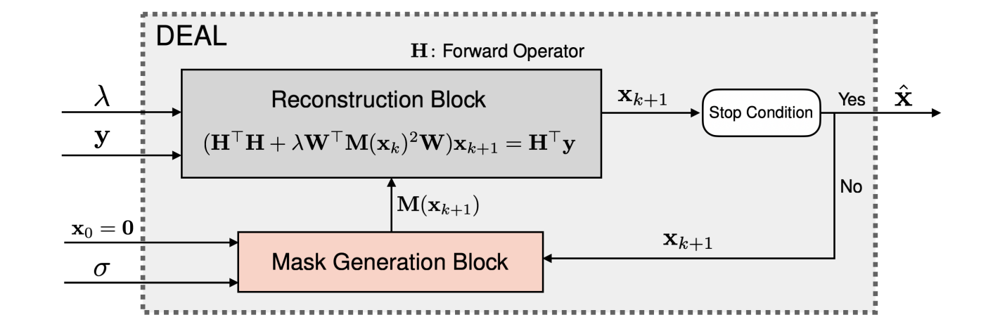

DEALing with Image Reconstruction: Deep Attentive Least Squares
DEAL is a novel image reconstruction framework that combines the interpretability of classical methods with the performance of deep learning. It builds on iterative refinement and attention-based regularization, resulting in an interpretable and robust architecture.
Key Highlights
- ~SOTA Performance: On-par with leading PnP methods using 30× fewer parameters.
- Universality: Same architecture across inverse problems with minimal tuning.
- Interpretability: Visual attention masks and reconstruction weights expose how each pixel is formed from input.
Architecture Overview
Figure 1: DEAL generates a sequence of reconstructions using iterative updates that alternate between reconstruction and attention-based mask generation.
Attention Mechanism

Figure 2: The mask generation block uses a shallow CNN to estimate pixel-wise attention masks that modulate the regularization strength.
Interpretability

Figure 8: Each pixel in the reconstructed image is a weighted average of the input measurements, adapted to the local image structure.
Citation
@article{pourya2025dealing,
title={DEALing with Image Reconstruction: Deep Attentive Least Squares},
author={Pourya, Mehrsa and Kobler, Erich and Unser, Michael and Neumayer, Sebastian},
journal={arXiv preprint arXiv:2502.04079},
year={2025}
}